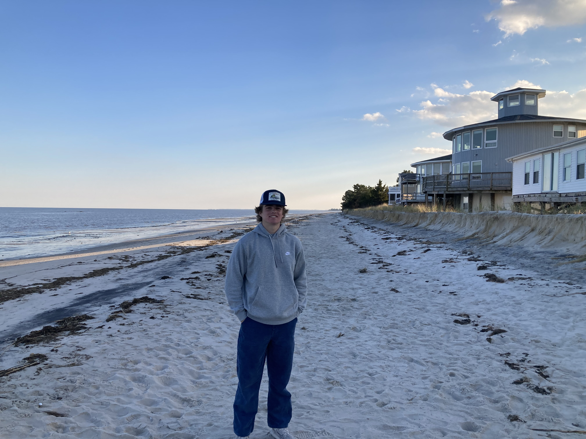
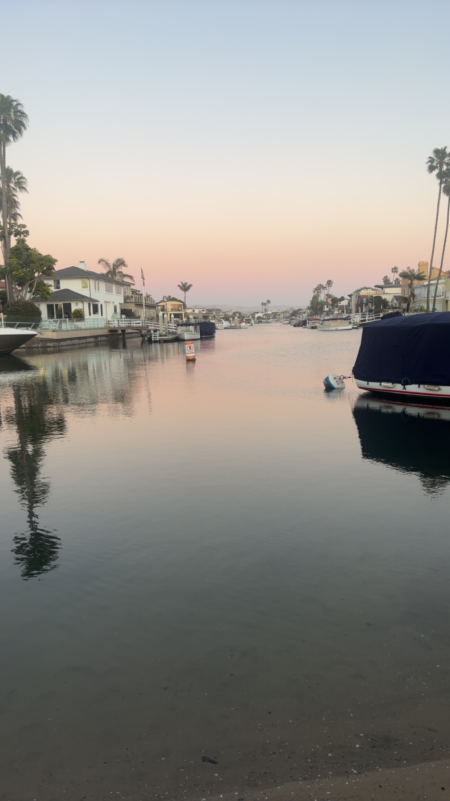

My Adventures
Exploring New York, Maryland, and Mexico
The City of New York
New York was an incredible experience. I loved the energy of the city. Walking around the streets was awesome! Tasting all the different pizza shops and hot dog stands was definently a cool experience. Go Yankees!

Maryland Memories
Maryland offered lots of history and beautiful waterfront views. Whether exploring the harbor or hanging out with friends, it was a great reminder of how diverse the East Coast can be.

Escaping to Mexico
Mexico was all about the culture, the food, and the sunshine. Taking a break from the world to enjoy the peaceful beach and scenery was exactly what I needed.
